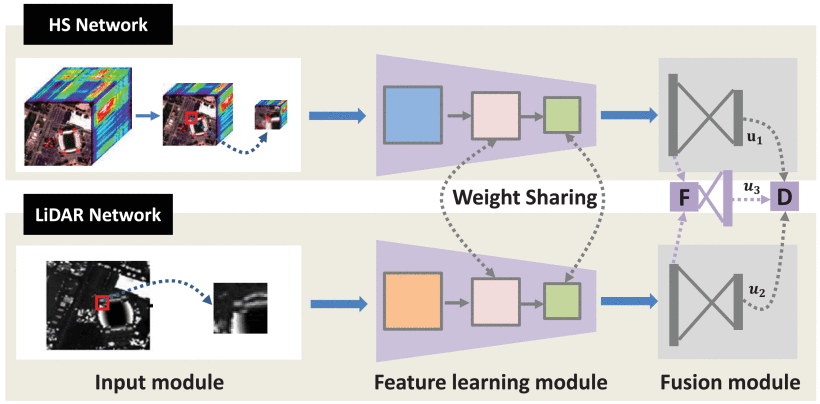
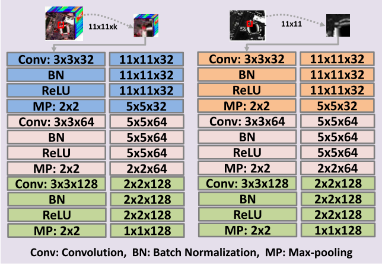
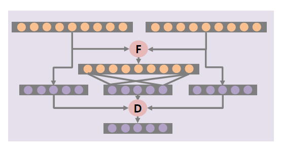
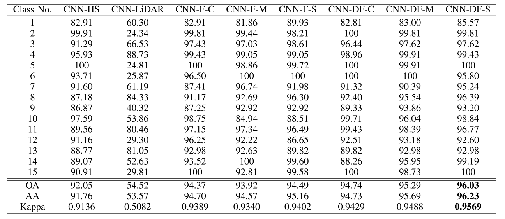
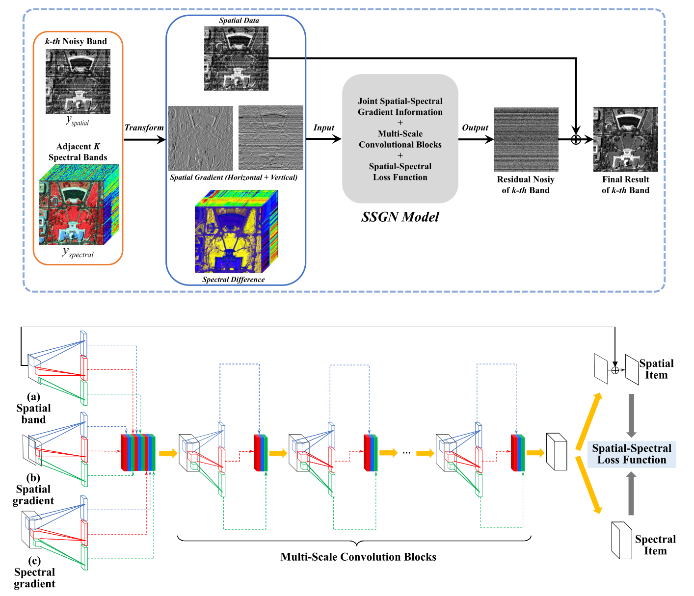
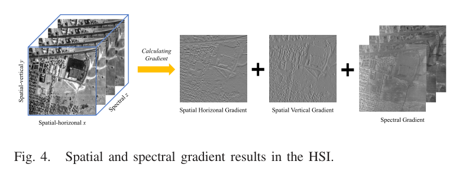
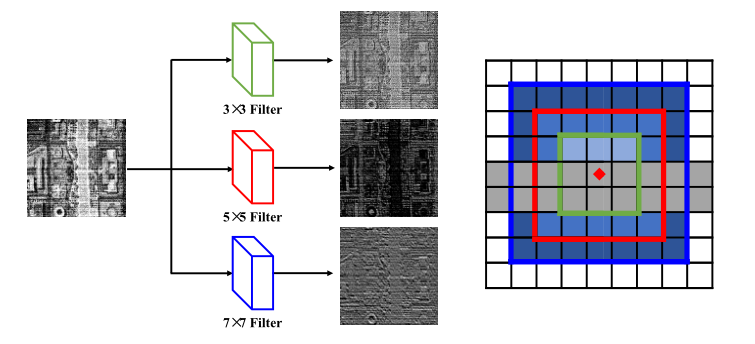
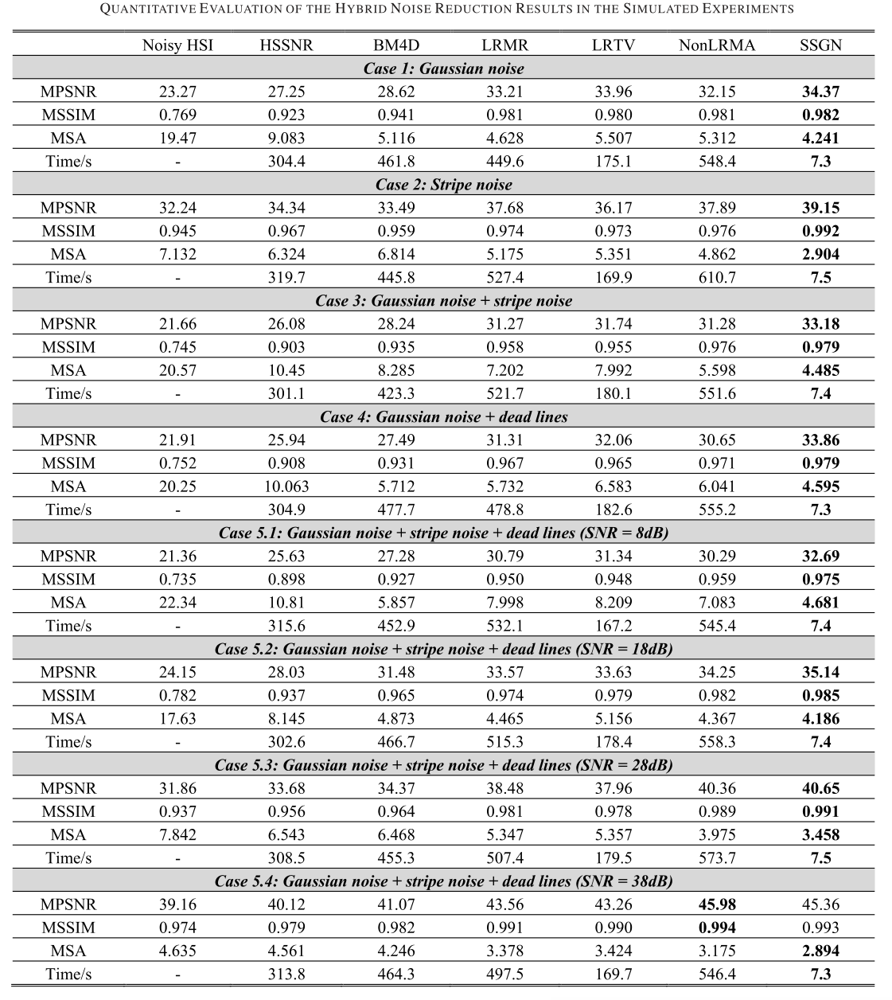

论文阅读-0x02
两篇论文的阅读笔记：《Classification of Hyperspectral and LiDAR Data Using Coupled CNNs》,IEEE TGRS 2020 &《Hybrid noise removal in hyperspectral imagery with spatial-spectral gradient network》,IEEE TGRS 2019 [代码]
Classification of Hyperspectral and LiDAR Data Using Coupled CNNs
Introduction
-
Hyperspectral and LiDAR Data：高光谱(HSI)和激光雷达数据
-
HSI图像具有丰富的光谱信息，但是对于同一材质的物体区分性较弱
-
LiDAR图像则具有丰富的深度信息
-
例如：区域中存在混凝土结构的楼房和道路，HSI图像很难区分二者之间的差别（ 因为它们的光谱响应是相似的 ），但是LiDAR图像则可以通过深度信息区分出楼房和道路。
-
相反，激光雷达数据无法区分由不同材料(如沥青和混凝土)组成的具有相同高度的两条不同的道路。
-
论文使用两个耦合卷积神经网络（CNN）
-
一个用于从高光谱数据中学习光谱空间特征
-
另一个CNN用于从激光雷达数据中获取高程信息
-
-
两个CNN网络都由三个卷积层组成，最后两个卷积层通过参数共享策略耦合在一起
-
在这方面，主要有两种相关方法在使用
- 基于特征级融合：主要是一些特征图层次上的直接叠加，不过作者也说到会出现休斯现象，特别是在训练样本数量相对较少的情况下
- 为了解决这个问题，使用主成分分析(PCA)来降低维数
- 同时与本文相似， 可以设计许多次空间相关模型来融合提取的光谱、空间和高程特征
- 基于决策级融合：主要是在最终的结果输出阶段进行融合，主要是分类器的选择和使用
-
在这之前有很多相关工作：有人直接将激光雷达数据作为高光谱数据的另一个光谱波段，然后将连接起来的数据输入到CNN中进行特征学习和分类；或者多个CNN网络来训练等
-
论文主要贡献：
- 设计了两个耦合的CNN， 耦合的卷积层可以减少参数的数量，同时引导两个CNN相互学习，从而促进特征融合过程
- 在融合阶段，同时使用特征级和决策级融合策略。 对于特征级融合，除了广泛采用的级联方法外，还提出了求和和最大化融合方法。 为了增强学习功能的判别能力，分别向CNN添加了两个输出层。 最后，这三个输出结果通过加权求和方法组合在一起，其权重由训练数据上每个输出的分类精度确定
- 使用标准训练和测试集在两个数据集上测试了该模型的有效性
网络模型

- 网络主要包含两个部分： 用于光谱空间特征学习的HS网络；用于高程特征学习的LiDAR网络。
- 每个模块包括一个输入模块、一个特征学习模块和一个融合模块
- HS网络
- 利用PCA减少原始高光谱数据的冗余信息，然后在给定像素周围提取一个小立方体
- LiDAR网络
- 直接提取与高光谱数据空间位置相同的图像斑块
- 可以看到，在网络的feature learning模块中，使用了三层卷积层，最后两层共享参数。在融合模块中，构造了三个分类器。每个CNN都有一个输出层，融合后的特征也被送入一个输出层。

- 在第一层卷积之前，都先进行PAC操作来减少冗余信息
- HS网络和LiDAR网络的第一层卷积是分别独立的
- 第二卷积层，我们让HS网络和激光雷达网络共享参数，使用耦合策略
- 减少两次参数的数量，对于少量的训练样本是非常有用的
- 它可以让这两个网络互相学习
- 在没有权值共享的情况下，各网络的训练参数将利用各自的损失函数独立优化
- 这一层的反向传播梯度将由两个网络的损耗函数决定，即一个网络中的信息将直接影响另一个网络
- 第三卷积层，也使用耦合策略，这可以进一步提高从第二卷积层学习到的表示的区分能力
- 数据融合

- 在这里作者提出了一种基于特征层和决策层融合的新组合策略
- 如图所示，首先结合两个特征生成一种新的特征表示
- 将这三个特征分别输入到输出层中
- 最后，所有的输出层集成在一起，以产生最终的结果
- $ O = D[ f_1(R_h;W_1), f_2(R_l;W_2), f_3(F(R_h,R_l);W_3);U] $
- 其中特征融合可以采用逐元素相加或者Max函数
- $ F_3 = F_1 + F_2 或者 F_3 = max（F_1+F_2）$
- 对于决策级融合，采用加权求和的方法
- $ O = D(\hat y_1, \hat y_2,\hat y_3;U) = u_1 \odot \hat y_1+ u_2 \odot \hat y_2+ u_3 \odot \hat y_3 $
- 为加权操作
- 损失函数
- 然后表示HSI图像 $ y_1 $ 的交叉熵损失，。所表示 LiDAR 图像 $ y_2 $ 的交叉熵损失，表示融合信息O的交叉熵损失，所以最终的损失函数为：
- $ L = \lambda_1 L_1 + \lambda_2 L_2 + L_3 $
- 在实验中，权重参数根据经验将其设置为0.01
- 然后表示HSI图像 $ y_1 $ 的交叉熵损失，。所表示 LiDAR 图像 $ y_2 $ 的交叉熵损失，表示融合信息O的交叉熵损失，所以最终的损失函数为：
实验
- 训练参数
- batch size = 64
- learning rate = 0.001
- epochs = 200

- 休斯顿数据集上，使用不同模型下的准确率情况
Hybrid noise removal in hyperspectral imagery with spatial-spectral gradient network
Introduction
- 本文提出了一种用于HSI中混合噪声去除的空间光谱梯度网络(SSGN)
- 考虑到稀疏噪声特有的空间结构方向性和光谱差异，加上补充信息，采用空间-光谱梯度学习策略，有效地提取了HSI的内在和深层特征
- SSGN基于全级联的多尺度卷积网络，利用同一模型可以同时处理不同HSI或频谱中的不同类型的噪声
- 由于传感器的不稳定性和大气的干扰，HSI经常受到多种类型的噪声，如高斯噪声、条纹噪声、脉冲噪声、死线噪声和混合噪声
- 当前高光谱图像去噪：
- 手动参数必须针对不同的HSI数据进行适当、仔细的调整，这对于不同的场景和HSI传感器造成了不方便、不通用、耗时的缺点
- HSI的噪声同时存在于空间域和光谱域，其类型不同，水平也不同
- 克服上述去噪方法的不足，充分利用DCNNs的优点，考虑高斯噪声、条纹噪声、脉冲噪声、死线及其混合的噪声类型，提出了一种用于混合噪声去噪的空间光谱梯度网络(SSGN)。主要的创新可以概括如下
- 提出了一种用于HSI去噪的空间频谱卷积网络SSGN，将空间数据和相邻的光谱数据同时使用在全级联的多尺度卷积神经网络块中
- 该模型将空间梯度和光谱梯度结合在一起
- 利用空间梯度提取稀疏噪声在水平和垂直方向上的独特结构方向性
- 利用光谱梯度获取光谱附加互补信息用于噪声去除
- 同时在空间光谱损失函数中加入了光谱梯度，在整体框架内减小了光谱失真。
- 实验结果表明，该方法能够通过单一模型有效地处理不同HSIs或光谱中的高斯噪声、条带噪声和混合噪声。与其他最新的HSI去噪算法相比，在不同混合噪声场景下，SSGN算法在评估指标、视觉评估和时间消耗方面都有较好的表现
关于高光谱图像去噪
- 现有的HSI去噪方法大致可以分为两类
- 基于过滤器的方法
- 通过傅立叶变换、小波变换或非局部均值(NLM)滤波器等滤波操作从噪声信号中分离出干净的信号
- 作者举例了一些相关方法，不过指出这些滤波方法的存在缺点
- 使用了手工制作的固定小波，对变换函数的选择很敏感，没有考虑杂波等高频干扰几何特性的差异
- 基于模型优化的方法
- 有很多已经提出并使用的方法，如总变差、稀疏表示、低秩矩阵和张量模型
- 都考虑了HSI数据的合理假设或先验。这种方法可以将有噪声的HSI映射到清晰的HSI，以保持空间和光谱特征
- 对于HSI，相邻波段之间的高光谱相关性和一个波段内的高空间相似性都可以揭示HSI的低秩特性或张量结构
- 为了充分利用3-D张量高光谱图像的光谱空间结构特性，人们提出了基于低阶张量的高光谱图像去噪方法，但是这些方法往往以较高的计算时间消耗为代价来获得更好的性能。
- 有很多已经提出并使用的方法，如总变差、稀疏表示、低秩矩阵和张量模型
- 不同HSI去噪方法对混合噪声的不适应性和低效率问题仍然制约着HSI去噪的应用
- 基于过滤器的方法
网络模型
- SSGN方法考虑了噪声结构特征、各频带的空间特性和频谱冗余
- 通过在含噪声的HSI patch和去噪后的HSI patch之间进行端到端的学习
- 同时采用模拟的第k个噪声频带及其水平/垂直空间梯度和相邻谱梯度(Cube)作为输入数据，输出第k个噪声频带的残余噪声

- 网络输入：
- (a) 噪声下的当前输入空间谱带
- (b) 输入空间谱带的水平和垂直梯度
- © 前空间谱带相邻K个谱带的差异（Cube）
- 其变换得到方式如下👇
- 空间和光谱的联合梯度信息：
- 空间波段的梯度信息由于其独特的结构方向性，在一定程度上可以有效地突出稀疏噪声，特别是稀疏分布的条带噪声
- 由于HSI数据包含数百个波段的丰富光谱信息，每个波段的噪声水平和类型通常不同。这些差异提供了额外的补充信息，有利于消除混合噪声
- 因此作者认为利用空间和光谱的联合梯度信息，可以从空间和光谱域去除HSI中的混合噪声，包括密集噪声和空闲噪声

- 其计算方式如下：
- $ \begin{align*} \mathbf{G}_x (m,n,k)=&\mathbf{Y}(m+1,n,k)-{\mathbf{Y}}(m,n,k)\end{align*}$
- $ \begin{align*}{\mathbf{G}}_y (m,n,k)=&{\mathbf{Y}}(m,n+1,k)-{\mathbf{Y}}(m,n,k) \end{align*}$
- $ \begin{align*} {\mathbf{G}}_z (m,n,k)=&{\mathbf{Y}}(m,n,k+1)-{\mathbf{Y}}(m,n,k)\end{align*} $
- 其中分别表示当前波段的水平空间梯度、垂直空间梯度和光谱梯度
- 网络最终使用残差学习策略
- 多尺度卷积块：
- 通过不同尺寸的卷积核大小能偶获得不同的感受野大小。特别是在条带噪声和坏线的场景下效果十分明显

- SSGN还采用了完全级联的多尺度卷积块来提取更多具有不同接收域大小的特征图。
- 随着层深的增加，不同块的结果逐渐接近最终的残差混合噪声，包括高斯噪声等稠密噪声和稀疏条纹噪声、死线等稀疏噪声
- 三个输入经过多尺度卷积模块获得最终的输出，SSGN使用 光谱-空间损失函数 进行优化
- 传统的图像去噪、超分辨任务都是使用欧几里得损失函数，但是这仅仅考虑了空间信息
- 为了在保持空间结构信息的同时抑制光谱失真，本文提出了一种新的损失函数
- $ \begin{equation*} \xi (\Theta)=(1-\alpha)\cdot \xi _{\mathrm spatial} +\alpha \cdot \xi _{\mathrm spectral}\end{equation*} $
- $ \alpha = 0.001 $ 是权衡空间和光谱项之间的惩罚参数， 可以看出光谱损失占的权重很小
- 其中$ ξ _{spatial} $ （空间） 和 $ ξ _{spectral term}$ （光谱）分别定义为
- $ \begin{align*} \xi _{\mathrm spatial}=&\frac 1 {2T}\sum _{i=1}^T {\big | \boldsymbol{ Res _k^i -({\mathbf Y}_k^i -{\mathbf X}_k^i)} \big |_2^2} \end{align*} $
- $ \begin{align*}\xi _{\mathrm spectral}=&\frac 1 {2T}\sum _{i=1}^T {\sum _{z=k-\frac K 2,z\ne k}^{k+\frac K 2} {\big | {\Phi _z^i -{\mathbf G}_z^i} \big |_2^2}}\end{align*} $
实验
- 去噪前，将各HSI波段的灰度值独立归一化为[0-1]
- 模拟实验采用平均峰值信噪比 (MPSNR)、平均结构相似度指数(MSSIM)和平均谱角(MSA)作为评价指标
- 一般来说，在模拟实验中，较高的MPSNR和MSSIM值和较低的MSA值可以反映出较好的HSI去噪效果
- 整个网络学习率被初始化为0.001。每过10个epoch，通过乘以0.5的下降因子来降低学习率
- 采用Adam优化算法，动量参数分别为0.9、0.999和
- 后面作者对实验结果进行了很充分的分析，而且比较了加入各种手工混合噪声对实验结构的影响，而且时间效率很高。
